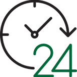

ICT HelpDesk Services
By utilizing 24×7 LIVE helpdesk, you can relieve your team from working nights and weekends and prevent your high-value employees from working on low-value tasks.
By utilizing 24×7 LIVE helpdesk, you can relieve your team from working nights and weekends and prevent your high-value employees from working on low-value tasks.
| 100% Transparency | Fast Response | Monitoring |
| Flat per node rate allows you to effectively manage costs | Average response time of 15 minutes, allowing your team to work on the larger issues at hand | We deploy proactive technology management to monitor. |
| Business Day |
| 8 AM – 5 PM US TIME ZONES Call, answer, and support services provided from our Jersey City, NJ offices |
|  |
| 24x7 Support |
| 24×7 all you can eat buffet of full support. US based business day support and after hours support from our NOC |
| Call Answering |
| 24×7 Call Answering services only. POC will be notified when a call or request is made |